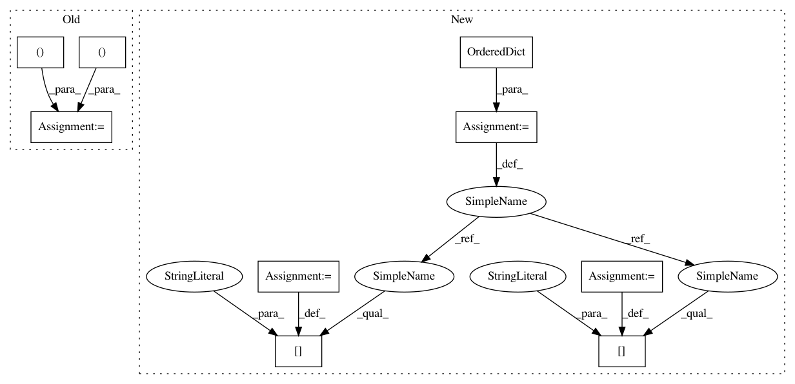

dbcbac206dd35af5592963dce4655de94dc7e7e4,bnpy/learnalg/ElapsedTimeLogger.py,,writeToLogOnLapCompleted,#Any#Any#,37
Before Change
agg_curlap = 0.0
agg_total = 0.0
for subeventName in sorted(CumulativeTimesDict[eventName]):
curlapstr += " cur_%s %.2f" % (
subeventName, CurrentLapTimesDict[eventName][subeventName])
totalstr += " ttl_%s %.2f" % (
subeventName, CumulativeTimesDict[eventName][subeventName])
agg_curlap += CurrentLapTimesDict[eventName][subeventName]
agg_total += CumulativeTimesDict[eventName][subeventName]
CurrentLapTimesDict[eventName][subeventName] = 0.0
agg_curlapstr = " cur %.2f" % (agg_curlap)
agg_totalstr = " ttl %.2f" % (agg_total)
msg = lapstr + agg_curlapstr + agg_totalstr + curlapstr + totalstr
LogDict[eventName].log(level, msg)
def configure(taskoutpath, moveNames, doSaveToDisk=0, doWriteStdOut=0):
global LogDict
After Change
agg_curlap = 0.0
agg_total = 0.0
df_dict = OrderedDict()
df_dict["lap"] = lapFrac
for subeventName in sorted(CumulativeTimesDict[eventName]):
df_dict["curlap_%s" % subeventName] = (
CurrentLapTimesDict[eventName][subeventName])
df_dict["alllaps_%s" % subeventName] = (
CumulativeTimesDict[eventName][subeventName])
agg_curlap += CurrentLapTimesDict[eventName][subeventName]
agg_total += CumulativeTimesDict[eventName][subeventName]
// Reset counter
CurrentLapTimesDict[eventName][subeventName] = 0.0
df_dict["curlap_total"] = agg_curlap
df_dict["alllaps_total"] = agg_total
df = pd.DataFrame([df_dict])
opts = dict(index=False, float_format="%.3f")
if np.allclose(lapFrac, 1.0):
msg = df.to_csv(header=True, **opts)
In pattern: SUPERPATTERN
Frequency: 3
Non-data size: 9
Instances
Project Name: bnpy/bnpy
Commit Name: dbcbac206dd35af5592963dce4655de94dc7e7e4
Time: 2019-06-06
Author: mike@michaelchughes.com
File Name: bnpy/learnalg/ElapsedTimeLogger.py
Class Name:
Method Name: writeToLogOnLapCompleted
Project Name: biolab/orange3
Commit Name: 4666a022939c40b18d34c9657fd65c710ecfb85f
Time: 2015-10-30
Author: janez.demsar@fri.uni-lj.si
File Name: Orange/canvas/report/report.py
Class Name:
Method Name: describe_domain_brief
Project Name: bnpy/bnpy
Commit Name: dbcbac206dd35af5592963dce4655de94dc7e7e4
Time: 2019-06-06
Author: mike@michaelchughes.com
File Name: bnpy/learnalg/ElapsedTimeLogger.py
Class Name:
Method Name: writeToLogOnLapCompleted
Project Name: biolab/orange3
Commit Name: 602661a5bd86e38ec1915d04a25eac901bc242b7
Time: 2015-12-04
Author: janez.demsar@fri.uni-lj.si
File Name: Orange/canvas/report/report.py
Class Name:
Method Name: describe_domain_brief